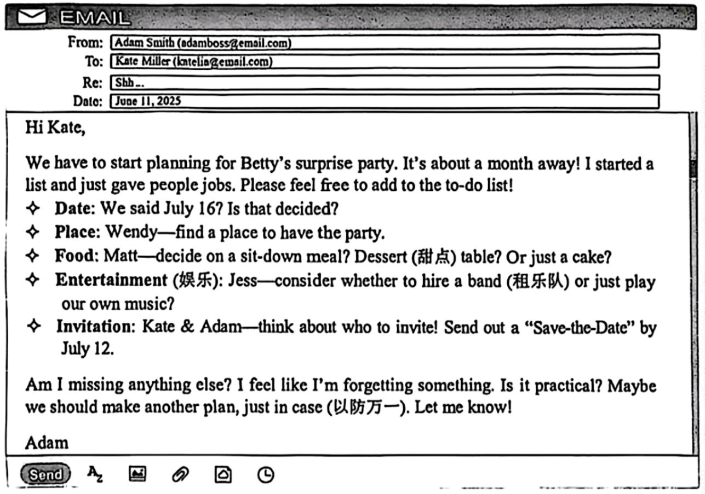

2025 年长沙市初中学业水平考试
完成所有题目后点击底部「提交批改」查看得分与解析。
第一部分 听力（共两节，满分 20 分）
第二部分 阅读（共两节，满分 30 分）

One morning, I stopped at my favorite restaurant to get something to eat and got comfortable at a small table. Shortly after, I noticed four young people sitting at a table near me. After simply greeting each other and ordering, they all looked at their phones and continued to do so until their orders arrived. After photographing their food, they ate, continuing to look at their phones. I was wondering why they came here to eat together. They were phubbing, or phone snubbing (冷落), a very common problem these days.
You may not know the word "phubbing", but this kind of act is not strange to you. In fact, 32% of people report that they are phubbed two or three times a day.
Do you have a conversation on your phone while talking to another person face to face? Do you scroll (上下滑动) through your phone while eating with someone for fear of missing out? If your answer is yes to either of them, you might be a "phubber".
The writer of The Psychology of Phubbing did a survey and found that the influence of phubbing on relationships can be very harmful or destructive. For example, children felt that parents who phubbed them didn't care about them. This led to a feeling of being left out. Also, partners who were phubbed might be less satisfied with the relationship because of jealousy (嫉妒) and worries.
Phubbing is a learned act, so unlearning it is possible. Start by accepting the problem. Set a time limit (限制) for not using your phone. Create areas where phones are off-limits.
Don't let the modern technology which is designed (设计) to bring people together separate you from others.
I used to teach English as a volunteer in Africa. Some of my friends asked me, "Don't you miss your home, Emily?" I told them I was the only child in my family and I truly had an easy life at home. However, I got bored of having a "good" time at home and needed a change.
The kids from Africa were eager (渴望的) to learn and easy to teach. I was surprised at how smart they were. Talking with them made me think a lot. When you come from a poor area, you must grow up fast and deal with all kinds of difficult situations.
Volunteering has always been easy for me because I don't like to do the same things every day. My job also gives me the freedom to choose when and where I work. Although I don't get paid for volunteering, I'm old enough to know that money is not the only way to get rewarded (回报). The experience itself is priceless. I make lots of connections with good people. Also, when I volunteer, I often work with people who are worse off than I am. That has taught me to practice thankfulness for what I have. Believe me, this life lesson is worth a million dollars.
I am not a perfect person. In a sense, I think I'm selfish (自私的). But you don't have to be a perfect, selfless person to volunteer. In fact, I have benefited (受益) a lot from volunteering. Volunteering helps others, and it can also help yourself, too. The biggest benefit of volunteering is that it helps you develop your character (品质), and that's the passport to a rich and meaningful life.
Can you play basketball? Some people may think it is too competitive. However, it offers many benefits for both mind and body. Whether you are playing with friends or joining a team, basketball helps you stay positive (积极的), build skills, and develop good habits. ____11____
It's a good way to stay fit.
____12____ Running, jumping, and dribbling (运球) during a game help you to keep healthy. As a player, you must also move quickly while controlling the ball and avoiding competitors.
It's a team sport.
Teamwork is the key. ____13____ You have to trust and support each other during matches. Pass the ball when someone is in a better position (位置). Each member has to do their part to help the team win. Remember, no one can win alone.
____14____
The speedy nature of the game requires focus (专注) and quick decision-making. New difficulties always appear during a game. You have to think on your feet and keep cool in all situations. So you need to think of ways to face and overcome difficulties. And that helps you solve problems in your daily life.
It improves communication.
Stay connected with your teammates during matches. If you have a winning idea, tell your teammates! ____15____ Communication is an important part of basketball. The winning team is the one that works together and communicates well.
Basketball isn't all about athletic (运动的) ability. The game is also about using your brains and good teamwork. So call your friends and give it a try!
第三部分 语言运用（共两节，满分 25 分）
When Liivand was little, she was often sick. To get stronger, she ____16____ swimming. Soon after, she was taking part in open-water swimming competitions, sometimes even in icy water.
Several years ago, Liivand moved to Florida, but she continued to ____17____ in the sea. One day during her training, she almost swallowed (吞) some plastic (塑料) waste in the sea.
That experience made Liivand think of all the sea animals. These animals face ____18____ problems every day like her. So she decided to do something to raise people's awareness (意识) of ____19____ pollution. Thinking about sea animals gave Liivand the idea of swimming like a sea animal. Instead of using her arms, she ____20____ swimming with a rubbery fin (橡胶脚蹼) on her feet and swam forward by kicking her legs together. She believed that swimming with a rubbery fin would send "a bigger message".
Liivand first set the world record for swimming with a rubbery fin in 2019. She swam 10 kilometers off the coast of California. In 2021, she broke the ____21____ by swimming 30 kilometers, this time in Miami, Florida. But Liivand believed she could go ____22____. Every day, she got up at 4:00 a.m., put on her fin and went swimming. To improve her strength (力量), she sometimes even pulled other people in the water.
On May 7, 2022, Liivand managed to break her record again. ____23____, she swam 42.2 kilometers. It took her nearly 12 hours. Along the way, the woman collected all the ____24____ she found and put it in the small boat that was following her. Finally, the small boat held three full bags of rubbish. "Breaking a record means a lot to me, but being ____25____ to help the community and the world means much more," Liivand said.
I have always loved reading books that were written hundreds or even thousands of years ago. These are the literature classics (文学经典), and they ____26____ (be) of lasting value. For example, The Iliad, written almost three thousand years ago, tells us about the good and bad qualities (品质) of human nature; that is to say, we can be heroic and silly at ____27____ same time.
China has ____28____ (it) own long history of classical literature that dates back to the "Four Books and Five Classics". These books ____29____ (write) before the Qin Dynasty. No one was considered educated unless they had read these classics. Even today, students are encouraged ____30____ (read) The Analects of Confucius (《论语》).
There are also ____31____ (new) classics than those above, such as Journey to the West and A Dream of Red Mansions. Still, many people don't want to read them ____32____ they are long and have complex plots (复杂的情节). But they are great ____33____ (story) which also show the goodness and weakness of human nature.
Are you interested ____34____ learning more about the classics? Just reading some of them will give you a better understanding of the basis (基础) of culture then. They will also help you better understand yourself and others. ____35____ (slow) but surely, you will fall in love with them.
第四部分 读写综合（共两节，满分 25 分）
One recent weekend, I decided to learn how to make jiaozi with my grandmother. I thought it would be fun and easy at the very beginning, but soon it came to me that it wasn't as simple as it looked.
At first, I didn't pay attention to the sharp (锋利的) knife while cutting vegetables. My finger got cut because of my carelessness. Luckily, it wasn't serious. Grandma was nervous, and quickly helped me clean the cut. "My poor little girl! Be careful next time!" said Grandma softly. Through the painful lesson, I learned the hard way that safety should always come first.
After that accident (意外), I continued working with Grandma. We made the dough (面团), mixed the filling, and started shaping the dumplings. However, I kept making mistakes. Some of my dumplings were too thick, others were not properly sealed (封闭), and some even had too much filling, making them difficult to close. It was so discouraging, but Grandma kept encouraging me.
Until noon, we had a plate full of dumplings—some are perfect, and some are a bit messy. Dad ate my ugliest dumpling first. "Tastes better than it looks!" he laughed. Mom encouraged me, "They're the most delicious dumplings I have ever had. I am so proud of you!"
Now I understand that making jiaozi isn't just about the final product; it is about learning patience, having fun with my family, and improving through mistakes. Mistakes aren't signs of weakness. Instead, they should be viewed (看待) as stepping stones to achievements.
要求：（1）短文必须包含所有提示信息，并适当发挥；（2）80 词左右（标题和开头都已给出，不计入总词数）；（3）文中不得出现真实人名和校名。
Mistakes—steps towards success
Mistakes are a part of life. Instead of fearing them, we should see them as chances to grow.
___________________________________________________________________
___________________________________________________________________
___________________________________________________________________